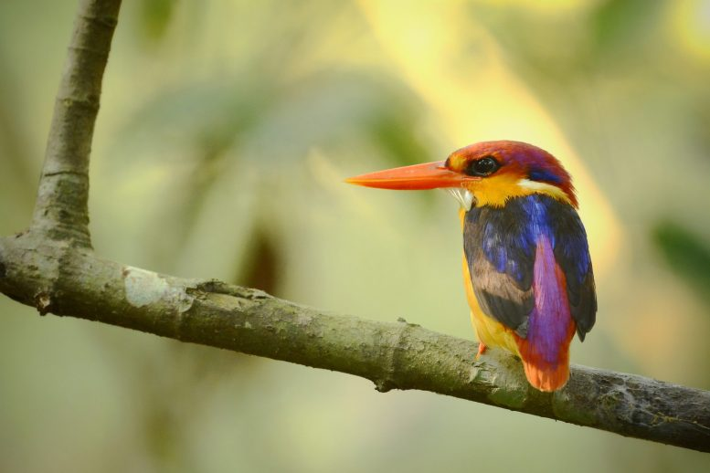
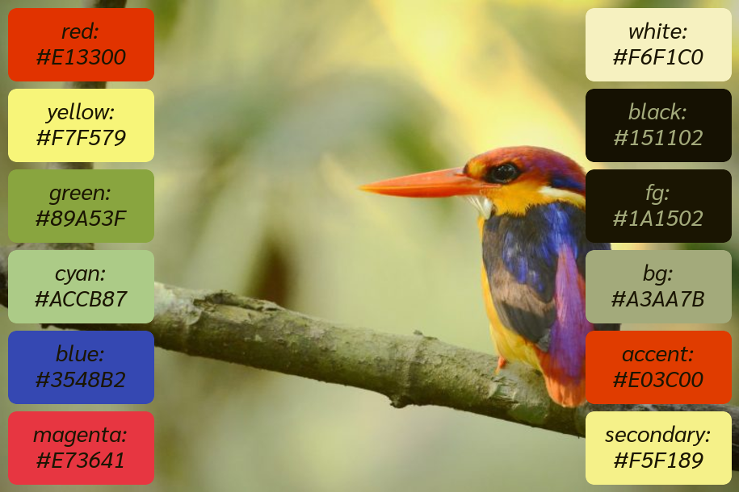

palette_generator
palette_generator is here to turn your images into beautiful palettes.
About
- There are three pieces to palette_generator:
extract_colors finds the N (default 512) best colors which represent the image, and writes them to a color histogram file.
make_theme takes a color histogram file and tweaks it slightly into a 12-color palette. This is intended for theming an operating system to match a wallpaper (so the color names are things like “cyan” and “magenta”), but in general does a bit better job at creating a diverse palette than extract_colors with N=12, so you can easily use it to tweak extract_colors for your own purposes.
Finally, gen_palette takes a color theme and puts swatches on a background image. This can be used for a generated theme from make_theme, or it can be a hand-curated list of hexadecimal codes.
All together, you put an image in, and get a palette automatically curated and displayed nicely for you.
 {kind=link}
{kind=link}
Installation
pip install .
Usage
usage: python -m palette_generator
[-h]
{extract_colors,make_theme,gen_palette,all}
...
Positional Arguments
- mode
Possible choices: extract_colors, make_theme, gen_palette, all
Sub-commands:
extract_colors
Extract a pre-computed palette from an image.
python -m palette_generator extract_colors
[-h] [-nc N_COLORS] [-hf HIST_FILE] img_path
Positional Arguments
- img_path
The image file from which the palette is extracted.
options
- -nc, --n-colors
The number of colors to extract from the raw image.
Default: 512
- -hf, --hist-file
The color histogram output.
Default: “color_hist.txt”
make_theme
Read a palette of colors, and turn it into a cohesive 12-color scheme. Prints suggested theme to screen and saves HEX codes to file.
python -m palette_generator make_theme
[-h] [-hf HIST_FILE] [-cf COLOR_FILE]
[-p P_MIX]
options
- -hf, --hist-file
each line is ‘{N}: {C}’ where {N} in the number of counts of color {C}, which is provided as a HEX code.
Default: “color_hist.txt”
- -cf, --color-file
Save curated color theme here. If extension is ‘.json’, save as a one-line json with color names. OR each line is a unique theme color, provided as a HEX code.
Default: “colors.json”
- -p, --p_mix
Percent to mix pure color in with image colors to get ‘red’, ‘yellow’, ‘green’, ‘cyan’, ‘blue’, ‘magenta’, ‘white’, and ‘black’. Recommend higher values for homogeneous images and lower values for heterogeneous images. Best results between 0.0 and 0.5. Use 0.0 for colors true only to image.
Default: 0.25
gen_palette
Given an image and a list of colors, generate a graphical representation of their palette.
python -m palette_generator gen_palette
[-h] [-cf COLOR_FILE] [-pf PALETTE_FILE]
[-ff FONT_FAMILY] [-fs FONT_SIZE]
img_path
Positional Arguments
- img_path
The image to create the palette on.
options
- -cf, --color-file
The color file.
Default: “colors.json”
- -pf, --palette-file
The palette file.
Default: “palette.png”
- -ff, --font-family
Font family for text.
Default: “Sarabun”
- -fs, --font-size
Font size for text.
Default: 28
all
Run all three sub-programs [extract, theme, palette]
python -m palette_generator all [-h]
[-pf PALETTE_FILE]
[-ff FONT_FAMILY]
[-fs FONT_SIZE]
[-cf COLOR_FILE]
[-p P_MIX]
[-nc N_COLORS]
[-hf HIST_FILE]
img_path
Positional Arguments
- img_path
The image to create the palette on.
options
- -pf, --palette-file
The palette file.
Default: “palette.png”
- -ff, --font-family
Font family for text.
Default: “Sarabun”
- -fs, --font-size
Font size for text.
Default: 28
- -cf, --color-file
Save curated color theme here. If extension is ‘.json’, save as a one-line json with color names. OR each line is a unique theme color, provided as a HEX code.
Default: “colors.json”
- -p, --p_mix
Percent to mix pure color in with image colors to get ‘red’, ‘yellow’, ‘green’, ‘cyan’, ‘blue’, ‘magenta’, ‘white’, and ‘black’. Recommend higher values for homogeneous images and lower values for heterogeneous images. Best results between 0.0 and 0.5. Use 0.0 for colors true only to image.
Default: 0.25
- -nc, --n-colors
The number of colors to extract from the raw image.
Default: 512
- -hf, --hist-file
The color histogram output.
Default: “color_hist.txt”
Developer Documentation
Tools for converting between color spaces. |
|
Extract a finite number of representative colors from an image. |
|
Create a 12-color theme from a pre-computed palette. |
|
Generate a palette image from a base image and set of colors. |